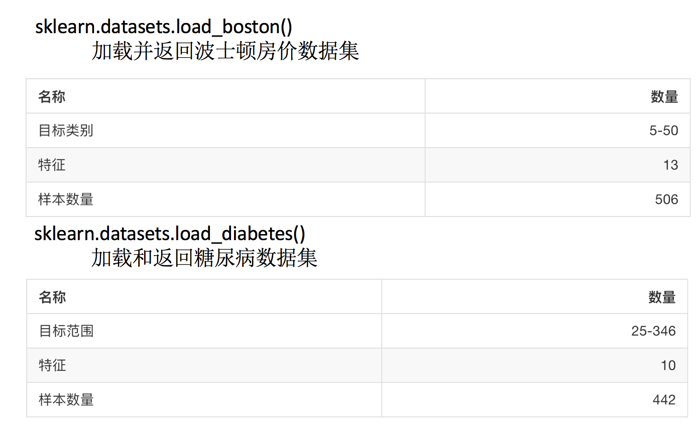

机器学习一般的数据集会划分为两个部分：
划分比例：
API
sklearn.model_selection.train_test_split(arrays, *options)结合后面的数据集作介绍
API
sklearn.datasetsdatasets.load_*()datasets.fetch_*(data_home=None)

load和fetch返回的数据类型datasets.base.Bunch(字典格式)
想一下之前做的特征工程的步骤？
fit_transform(对于文档建立分类词频矩阵，不能同时调用)我们把特征工程的接口称之为转换器，其中转换器调用有这么几种形式
fit_transformfittransformfrom sklearn.preprocessing import StandardScaler
a = [[1,2,3], [4,5,6]]
std1 = StandardScaler()
std2 = StandardScaler()
print(std1.fit_transform(a))
print(std2.fit(a))
StandardScaler(copy=True, with_mean=True, with_std=True)
print(std2.transform(a))
从中可以看出，fit_transform的作用相当于transform加上fit。但是为什么还要提供单独的fit呢, 我们还是使用原来的std2来进行标准化看看
b = [[7,8,9], [10, 11, 12]]
std2.transform(b)
print(std2.fit_transform(b))
在sklearn中，估计器(estimator)是一个重要的角色，是一类实现了算法的API
sklearn.neighbors k-近邻算法sklearn.naive_bayes 贝叶斯sklearn.linear_model.LogisticRegression 逻辑回归klearn.tree 决策树与随机森林sklearn.linear_model.LinearRegression 线性回归sklearn.linear_model.Ridge 岭回归sklearn.cluster.KMeans 聚类